毘沙門天/静岡県富士市
富士市の田子の浦近くに毘沙門天という寺がある。
正式には妙法寺と呼ばれるこの寺、境内の建物がアジア各国の建築様式に乗っ取って建てられている。
 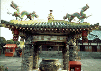 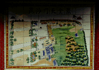
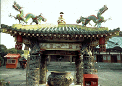 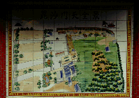
本堂とその隣の客殿は柴又の帝釈天によく似たオーソドックスな和風の寺院建築。その右の信徒会館らしき建物はインド風、本堂前にあるアレ、何て言うんですか、お香がバンバン焚いてあってその煙を頭にかけたりするヤツ、それはモロ中国風なのである。境内の案内板も中国風。しかも陶版画。そういえばこの寺、神社の鳥居まであったぞ、なんだかなあ。
で、さらに本堂左に目を移すと、何とネパールはカトマンズ郊外にあるボドナード、通称目玉寺のレプリカまである。この目玉寺は10年程前に行ったことがあるのだが、私自身特に思い入れの強い寺で、いうなれば私の珍寺好きのきっかけともなった寺だけに、レプリカといえども感激もひとしおなのである。尤も本家の目玉は澱んでいてすっごくいやらしいのだが、ここの目玉はちょっとアニメ系入ってました。
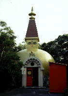 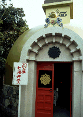
で、その目玉寺のレプリカの建物には入口があり、そこに「洞窟七福神めぐり」なる看板が見える。コレは行かねば、と思い入場券（やけにデカい）を買い求め、入口を潜ってみる。
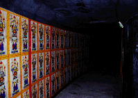 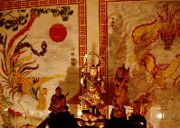
ドーム天井の部屋を抜け階段を降りると、その先は回廊が続いている。薄暗く先が良く見えない通路の両壁には中国風の陶版画が同じ図柄で延々と続いている。そして何と言っても暗い回廊内に流れるインド音楽が気持ち悪い。曲がりくねった回廊を進むと途中にはきらびやかなブースが六ヶ所ありそれぞれ中華調の七福神がまつられている（福禄寿と寿老人だけ共同ブース）。全部の神様を御参りすると、出口が近付いてくる。しかしインド風にまとめたこの洞窟も出口附近に来て古物屋みたいにドタドタと七福神の置き物が並べられていて最後っ屁かまされた気分になる。
洞窟を出るとそこは本堂とインド風信徒会館の間。つまり丁度本堂の下が洞窟回廊になっていた事になる。
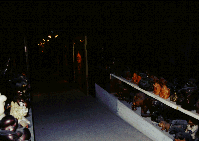 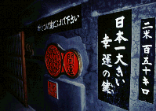
洞窟を出てからあらためて入場券を眺める。すると洞窟内には幸福の鍵なるモノがあったらしい。これは大きさ2メートル、重さ150キロの日本一の鍵で、「これに触れると一粒百万倍の福は必定」とある。そういえばそんなようなものがあったような気が・・・百万倍の福、逃したり。
本堂は神社のように拝殿と本殿が別れているスタイル。本尊は毘沙門天とのことだが、遥か奥の方にあり、堂内が薄暗いこともあって良く見えない。ただ手前にあった笑うダルマが無気味でした。
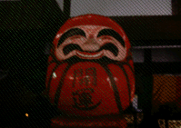
拝殿からふと後ろを見ると正面には奇妙な工場の煙突が見える。この辺は煙突の林立する大コンビナート地帯なのだ。この寺から眺めた為か、蛇踊りの蛇のように見えて仕方が無い。この煙突も借景のひとつなのか、と思わざるを得ない演出だ。
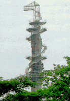
ここまで揃っているなら、仏舎利塔も欲しいとお思いの御人よ、心配するなかれ。近所の田子の浦港近くの公園内にきっちりと妙法寺製の大仏舎利塔が建っており、辺りを睥睨しているのであーる。
1998.9
情報提供はへりおすさんです
珍寺大道場 HOME